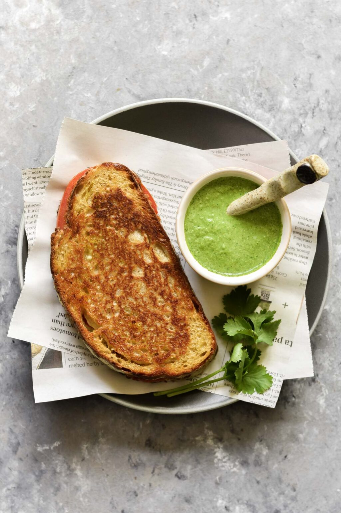
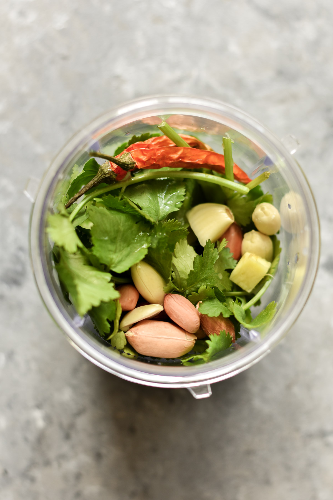
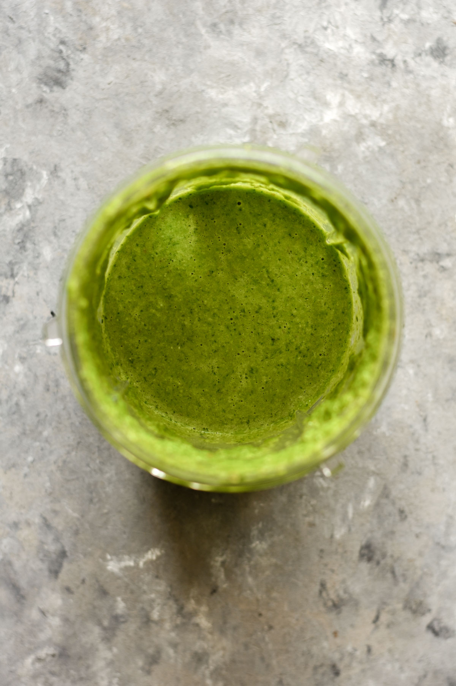
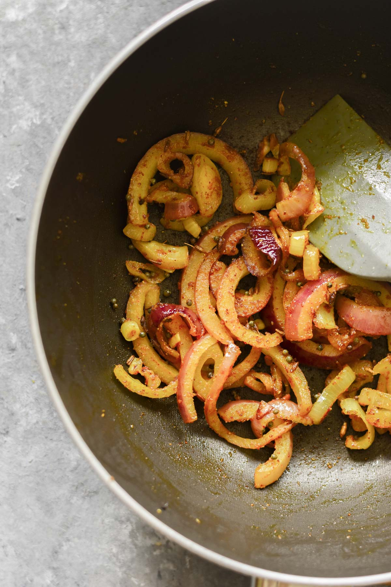
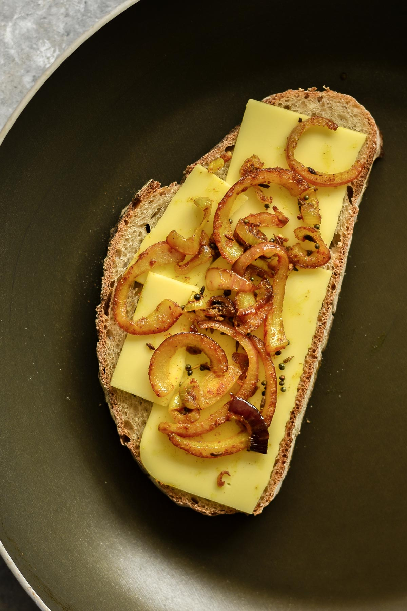
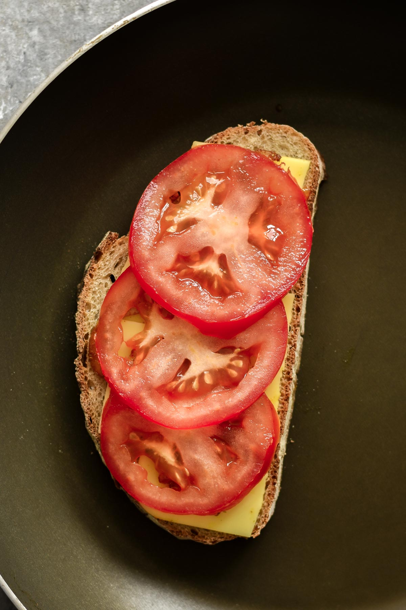
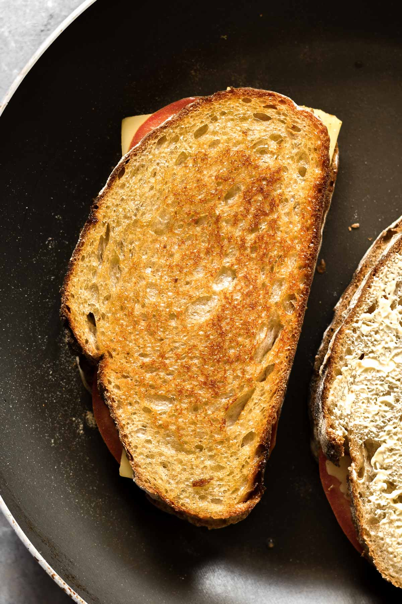

Masala Grilled Cheese

What is Masala Grilled Cheese?
Masala grilled cheese is a Indian upgrade on the childhood classic. This tasty recipe features spiced onions and
is served alongside a quick coriander chutney.
- Fresh and flavoursome
- Easily made vegan
- Ready in minutes!
Ingredients
For the Coriander Chutney
- 1 handful Coriander
- 1 handful Spinach
- 1 cm piece Fresh Ginger
- ½ clove Garlic
- 2 Fresh Chillies use more/less as you prefer
- 1 tablespoon Raw Peanuts use raw sunflower seeds for nut-free option
- ¼ Lemon juiced
- 2 tablespoon Water
For the Masala Grilled Cheese
- ½ Red Onion sliced into rings
- 1 teaspoon Sunflower Oil
- ¼ teaspoon Mustard Seeds rai
- ¼ teaspoon Cumin Seeds jeera seeds
- ⅛ teaspoon Ground Coriander dhana
- ⅛ teaspoon Ground Cumin jeera
- ¼ teaspoon Turmeric haldi
- ¼ teaspoon Chilli Powder mirchi
- 4 slices Sourdough Bread or bread of choice
- 6 teaspoon Butter or vegan butter
- 4 slices Cheddar Cheese or vegan cheese
- ½ Large Tomato sliced
Instructions
- Prepare the chutney: Add the coriander, spinach, fresh ginger, garlic, fresh chillies, raw peanuts, lemon juice, and water to a small blender and blend until smooth.


- Make the masala onions: Add the sunflower oil, mustard seeds and cumin seeds to a small pan over medium heat. Once the seeds begin to crackle, lower the heat and add the sliced red onion. Stir to coat the onions in the oil, then add the spices: ground coriander, ground cumin, turmeric, and chilli powder. Stir to combine and cook for 5 minutes until softened.

- Assemble the sandwich: Generously spread the butter over 4 slices of bread, ensuring to go all the way to the edges. Add one slice of bread, butter side down, to a frying pan over medium-low heat. Add a layer of cheese, then half the masala onions, and some tomato slices. Top with another layer of cheese and the final slice of bread, butter side up. Repeat for the second sandwich.


- Cook the grilled cheese: Cook the masala grilled cheese for 3-5 minutes on each side until golden and crisp. Ensure the cheese has melted before serving the sandwich hot alongside the chutney. Enjoy!

Yup your tasty food is ready!